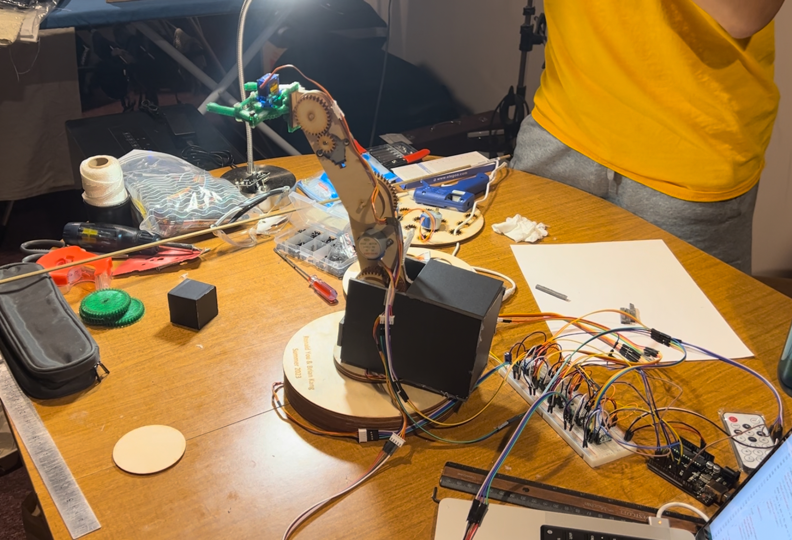
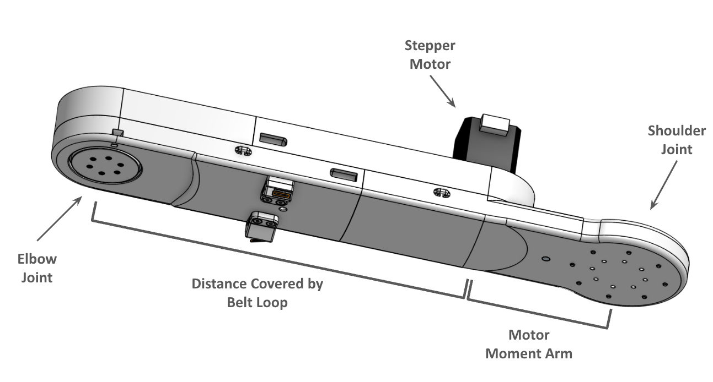
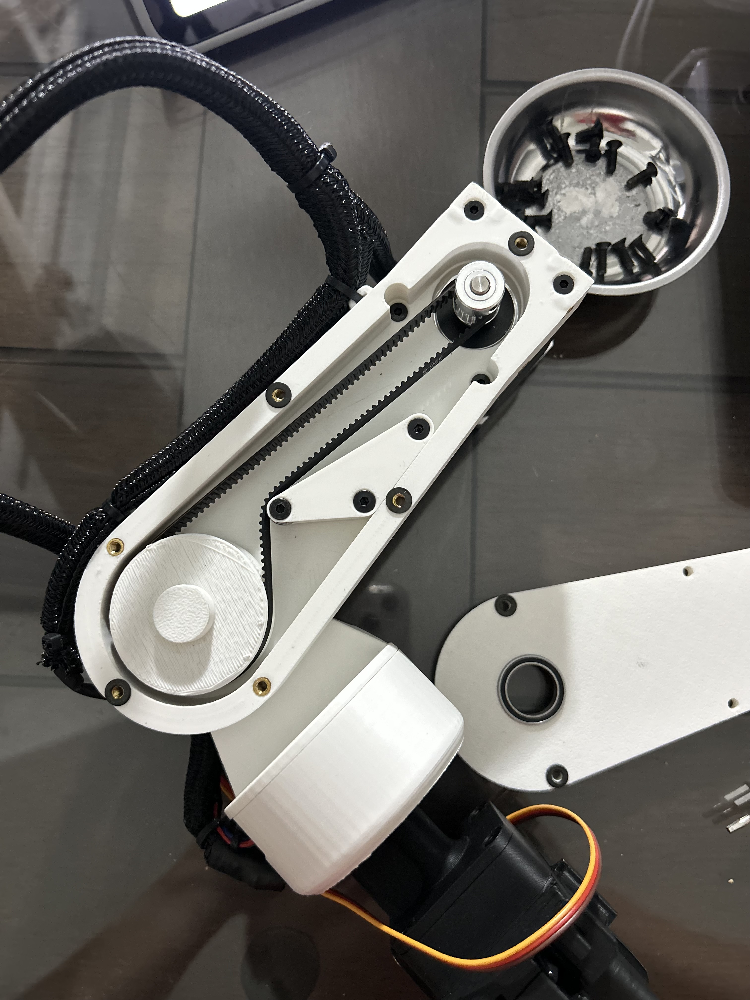
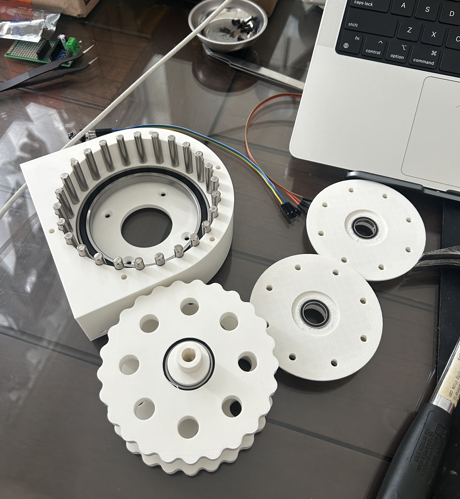
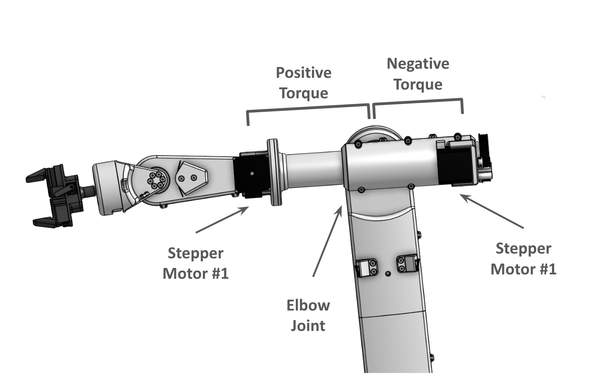
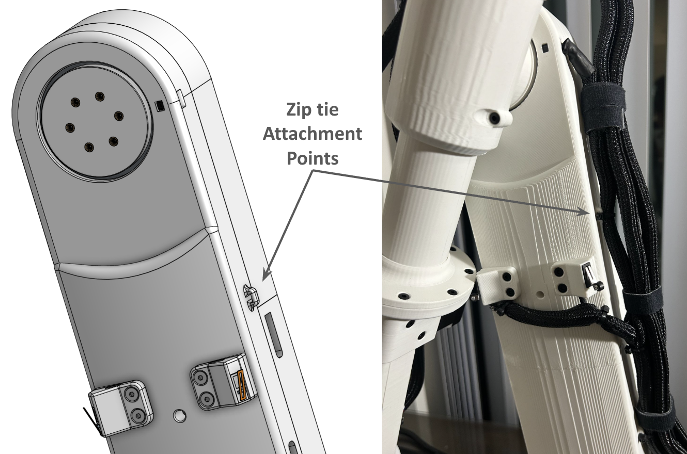
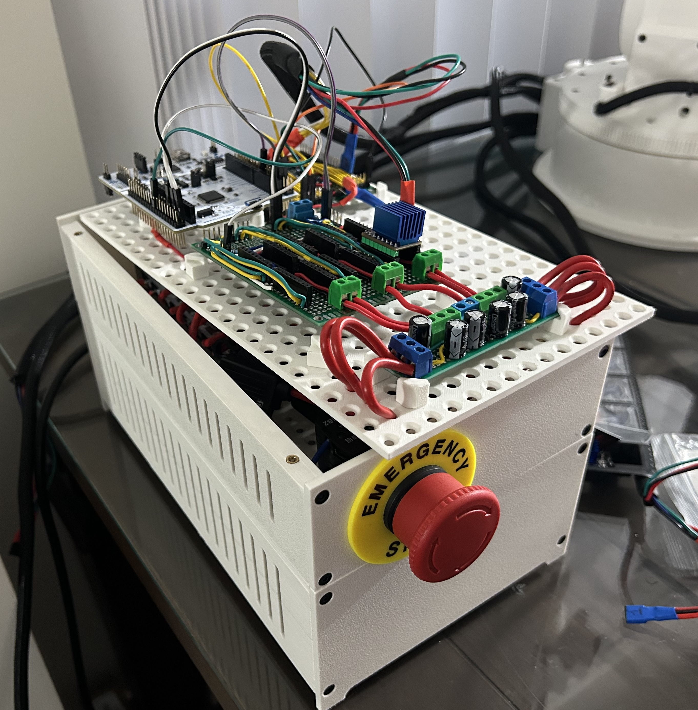
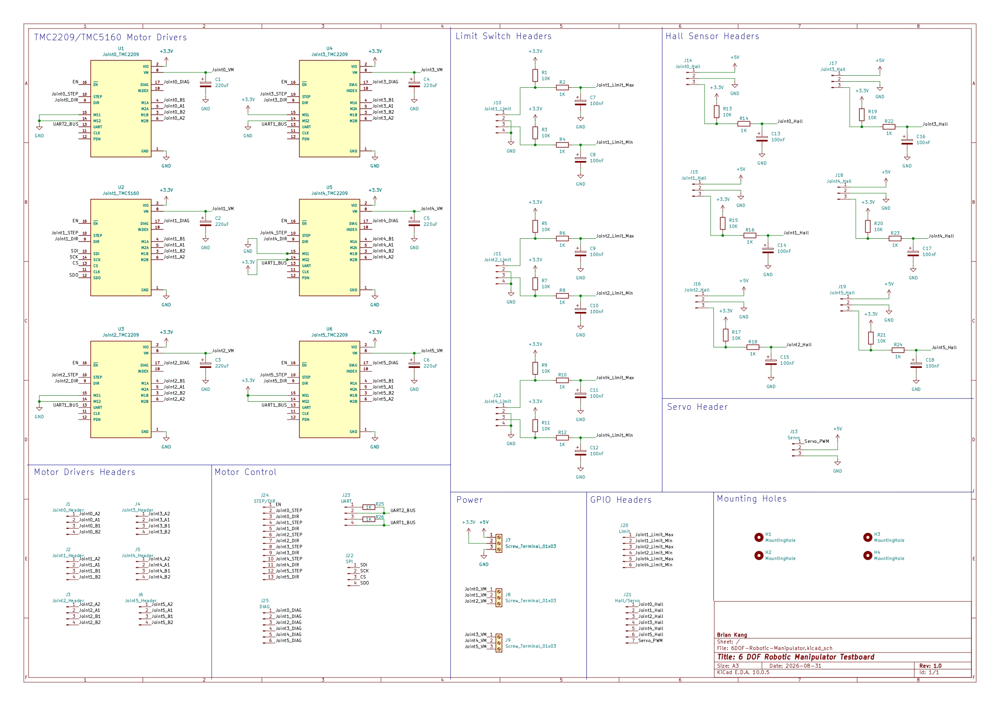
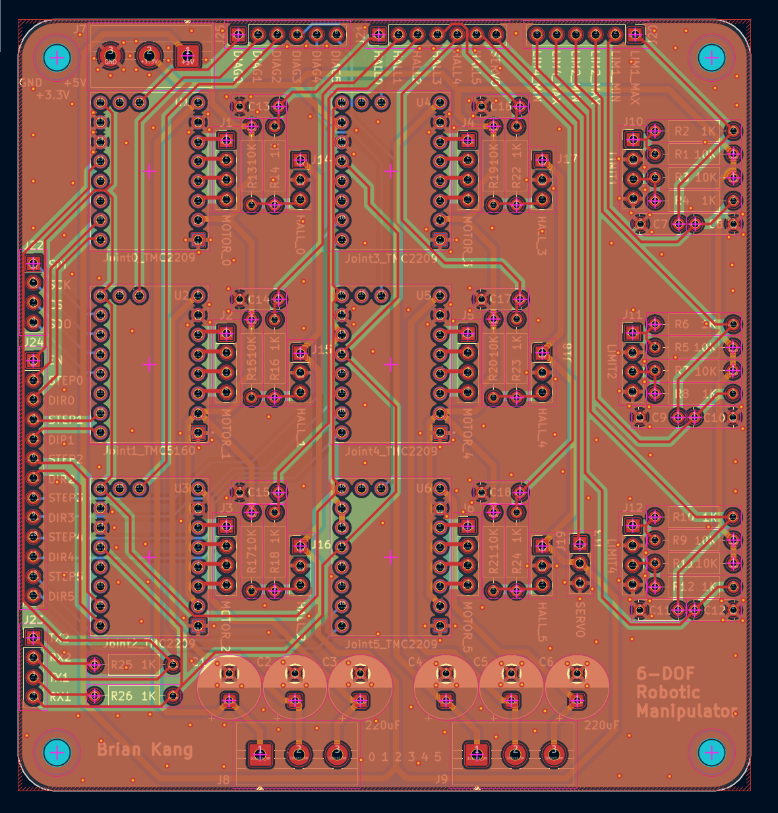

Projects
6-DOF Robotic Manipulator
July 2026 - Present
Overview

Robotic systems require contributions from nearly every engineering discipline: mechanical design, electronics, embedded systems, control, and software, with each subsystem playing a part to achieve the ultimate goal. This intersection of disciplines is what has drawn to me study Robotics. As an engineer, I want to build the skillset and understanding needed to work on every part of a system, developing a thorough understanding of how each component operates as well as they they interact with one another.
To grow my skills, I started this personal project to build a 6-DOF robotic manipulator. Taking on this project gives me hands-on exposure to the full stack of skills required to make it work, with full ownership from initial concept to working product. The skills I aim to develop through this project include:
- Mechanical: CAD, rapid prototyping, torque reduction, design for manufacturing and assembly
- Electrical: custom PCB design, stepper motor drivers, sensor integration, power distribution
- Embedded: STM32 firmware, stepper control, sensorless stall detection, hall effect homin
- Robotics: ROS2, forward/inverse kinematics, trajectory planning, MPC
- ML & Simulation: Gazebo, cameras, object detection, localization

I first attempted this challenge after first year, building a simpler robotic manipulator with the limited tools and knowledge I had at the time. With several years of experience and knowledge accumulated since then, I felt this was the right time to revisit the idea with a more ambitious plan. The photo shows that first attempt, which serves as a benchmark for level of growth in my skills I have achieved in just a couple years.
1. Mechanical Design
1.1 Mechanical Architecture

With a higher budget , 3D printer, and more tools, the design specifications are as follows:
- 6 degrees of freedom
- ~1 metre of reach
- 3D printed body
- Interchangeable end effector
- Stepper motor driven joints
Following an anatomical naming scheme, the robot arm assembly is split into multiple subsections, each designed as a separate sub-assembly. This configuration allows for modularity, allowing for modifications and part replacements without rebuilding the entire arm, leveraging rapid prototyping. Components were designed in OnShape to be 3D printed and assembled using heat-set inserts and standard M3 hardware.
1.2 Torque Reduction
Due to the relative large parts, the stepper motors would not be able to provide adequate torque with direct drive, thus torque reduction was required in order to have a functioning arm. Three main torque reduction methods were considered - cycloidal, belt, and planetary, due to the abundance of information and resources online regarding these methods.
1.2.1 Belt Drive vs. Planetary Gearbox

With a fully extended arm, there would be significant torque required by the shoulder joint. To lower the torque demand, the obvious solution would be to either increase the reduction ratio at the shoulder, or to decrease linkage lengths. However, a belt drive would provide an alternate solution, with the ability to increase the distance between the motor shaft and the output shaft by using a large belt loop. With this method, the heavy stepper motor can be positioned further back, reducing the moment arm length of the motor with respect to the previous joint, reducing the torque required. This cannot be achieved with a planetary gearbox as the output shaft is coaxial with the motor shaft, maintaining a large moment arm distance. Therefore the belt drive provides this additional advantage, without any added disadvantage.

Belt drives also have the benefit of minimal backlash, given the proper belt tension. With heat-set insert screw holes on the chassis, the belt tensioning blocks were designed to be easily interchanged. This allowed for minimal part reprinting, as a change in belt loop length or teeth on the output shaft pulley could use the same linkage chassis, but with a different sized belt tensioning block.
Given these benefits, a belt reduction was utilized on the arm and forearm linkages.
1.2.2 Cycloidal Drive

With the high torque demand of the shoulder joint, the cycloidal drive was chosen for its ability to have high reduction ratios and minimal backlash for a compact form factor. Its only downside would be its weight, as well as all the hardware required with the outer dowel pins, inner brass bushings, and shoulder screws. However, given its placement directly on top of the base, the weight is a nonissue.
To achieve the desired backlash, several iterations with the tolerancing were required. With very few parts, the cycloidal disc was chosen to be iterated upon, given its interfacing with the outer pins as well as the inner bushings. To eliminate variables and to allow for fast convergence, a fixed number of wall outer loops and infill density were decided upon, with the only change being the outer and inner tolerancing. The end product provides minimal backlash while maintaining low friction.
1.3 Counterbalancing

During the first attempt of building a robotic manipulator, there was inadequate torque reduction, causing the small 28BYJ-48 stepper motors to stall and unable to rotate. To work around the issue, I attached a bag of screws on the opposite side to counterbalance and cancel out the moment forces required, such that the motor could rotate.
Inspired by this, when designing the forearm, a counterbalancing placement of the heavy stepper motors were used. The forearm consists of wrist rotation, wrist pitch, and forearm rotation, requiring 3 NEMA 17 stepper motors in total. With the forearm rotating about the elbow joint, a design decision was made to place one motor on the opposite side of the elbow joint to create a negative moment, reducing the torque requirements at the elbow.
The benefit of this choice affected the design downstream, with the reduced elbow torque requiring a smaller reduction ratio and stepper motor within the arm linkage. With less hardware and a smaller motor, this would also reduce the torque requirements at the shoulder joint below.
1.4 Cable Management

During the design phase, I considered internal cable routing through the linkages, however this would have required significant additional design time, as well as making the arm harder to service. The alternative of leaving cables laying on the outside, would have left to a messy and unmanaged design.
Upon consideration, the solution came from an experience during my Red Bull Powertrains placement, where I spent a week in engine build helping disassmble a F1 power unit. I noticed throughout the disassembly process carbon fibre plates epoxied onto the body, with gaps sized for zip ties used to fasten wiring harnesses and looms directly onto the engine at specified tie-down points. Servicing the loom was simple, with a couple of snips to zip ties, the harness came free.
Taking inspiration from this, I added zip tie mounts across the linkages of the arm, allowing wiring to be fastened to the body. This similarly allows easy access and servicing by cutting a couple zip ties. Although a small part of the overall design, this simple solution provides tidiness without adding significant time to the design process.
2. Electronics
2.1 Electronics Architecture

At the heart of the manipulator is an STM32 Nucleo. Having previously worked with Arduino and ESP32, I wanted to push further into proper embedded control, and the STM32 platform was the natural next step.
The arm uses six stepper motors, one per joint: five NEMA 17s and a NEMA 23 for the shoulder. Within the NEMA 17s, size varies depending on joint load, from a 23mm motor at the wrist up to a 48mm unit at the elbow. The NEMA 17s and 23 are driven by TMC2209s and TMC5160 respectively, with the latter chosen for its higher current capabilities. These drivers were chosen over the A4988 I have previously used for their quieter operation, finer microstepping, StallGuard support, and UART/SPI configurability for features such as StealthChop and SpreadCycle
Each joint uses an A3144E hall effect sensor paired with a magnet for homing. For joints with a physically restricted range of motion, limit switches are placed on both ends of their travel.
Power comes from a 24V 20A DC switching supply distributed through terminal blocks. A buck convertor steps down to 5V for logic, sensors, and the gripper servo. The system is fully fused for protection, with an E-stop button that cuts power to the power supply.
2.2 Prototyping and Testing

The current prototype uses hand-wired soldered protoboards. Each component was tested individually to confirm they worked in isolation before being integrated together.
After building the wiring looms and installing sensors onto the arm, I conducted further testing, where isolated running of motors and sensors passed without issue. However, running the stepper motors and the hall/limit sensors simultaneously revealed a problem, where the motor wires running alongside the sensor wires in the loom induces EMI onto the sensor signals.
Filtering the EMI in software resolved the issue, but ultimately being in the prototyping phase and to simplify software, the issue was addressed at the hardware level with an RC filter for each sensor, clearing up the signal.
2.3 PCB Design


With the protoboard having reliability concerns, alongside the increasing complexity, the next step was to design a custom PCB. The overall structure mirrored the protoboard, with the addition of RC filtering and clearer labelling on headers.
The PCB contains traces for six motor drivers, each with pins for STEP, DIR, EN, DIAG, and UART/SPI, paired with input voltage smoothing capacitors. There are also six hall effect sensors, six limit switches, and a servo, which are paired with pull up resistors and RC filtering. Considering its 95mm x 100 mm footprint and the traces required, a four-layer design was chosen. The final product was designed in KiCad, and manufactured by JLCPCB.
3. Embedded Firmware
3.1 Motor Control
With the arm using stepper motors, the stepper position on startup is not inherently known, thus each joint is homed using the hall effect sensors.
Each motor's microstepping resolution is configured over UART (TMC2209) or SPI (TMC5160), from which joint position is track through step counting. There is an assumption that commanding a number of step results in the physical position corresponding as intended.
This open-loop approach one of the reasons why the TMC2209/5160 were chosen, as they support StallGuard. With the ability to detect motor stalls or skipped steps in real time, any event that breaks the step counting assumption is detected, allowing it to be reliabile until an issue occurs. As an added safety layer, joints with a limited range of motion use limit switches as a hard failsafe, in case the system commands a position the joint physically cannot reach.
3.2 Homing
Each joint requires homing to establish a known reference position before motion control can begin. Of the joints in the robotic manipulator, they can be categorized as either free or restricted, requiring different homing strategies.
A free joint has no physical range of motion limit and can rotate a full 360°. Therefore a single hall effect sensor and magnet pair is sufficient to home. The joint moves in a known direction from an unknown starting position until the magnet is detected, establishing the home position.
A restricted joint with a limited range of motion requires limit switches to indicate hard stops. The homing process is similar with the joint moving towards a know direction from an unknown starting point. However, if a limit switch is detected before the magnet, the motor reverses direction until it can detect the magnet and establish the home position.
Within the homing calculation, it is important to note that as the A3144E is a digital sensor,
it cannot report the exact home position based off the peak magnet strength.
Instead, there is a detection window where a magnet is detected, of which the true home is the midpoint.
Therefore home = (angle_on + angle_off) / 2. This allows for homing to be independant
of magnet placement radius, magnet width, and joint speed, as they only affect the size of the detection window itself.
This project is a work in progress. This page will be updated to reflect ongoing progress.